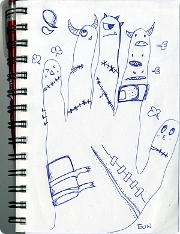

001. 전에 런던갔을때 빅토리아역에서
수다쟁이 프랑스 아저씨를 만났다;;
(울과에 있는 프랑스 아저씨도 그렇고 왜 이들은 한번 떠들기시작하면
멈출줄 모르는걸까.......OTL;;;;)
주로 동양인을 보면 중국인이냐 일본인이냐 먼저 물어보는게 대다수인데
단박에 나보고 한국사람이지? 라고 말해서 촘 놀랐음;;
이야기하다보니까 런던서 한국유학생들에게 방을 세놓는
랜드로드였음^^;;;
그래서 자기는 아시아인들 중에서 한국사람은 바로 알아본다고
그리고 자기 한국말도 좀 안다면서 나에게 마구 한국어를 하는데
"돈 주쉐요~" / "배궈파요~" 라고 하는거임
그래서
"do you want some money? and are you hungry?" 라고 물어보니
"no i just said 'hello' in korean" 했음;;;;;
........................................아자씨 한국말 어디서 배우셨어요;;;; OTL;;;;
알고보니 집 렌트해서 살고있는 한국유학생이 저렇게 갈켜줬다고
지금은 자기도 무슨뜻인지 알고있는데 그냥 나 함 웃길려고 그런거구
처음 저렇게 길바닥에서 한국사람한테 말걸었을때 정말 당황했었다고
"난 이제 절대 J군이 하는말 못믿어 ㅠㅂㅠ"
라고 말하는데 촘 귀여웠음 ㅋㅋㅋㅋ
가끔 이렇게 길거리에서 생판 모르는 남한테
친근하게 말거는 사람들 보면 신기하당 ㅎㅎ
002. 일본살때도 아르바이트하는곳에서
중국인 / 일본인들 사이에 나만 '대장금'을 안봐서
"어떻게 그걸 안볼수가있어~게다가 넌 한국사람이잖아~!!"
란 소릴 들었는데
난 설마 그 소리를 영국서 것도 헝가리 아가씨랑 리투아니아 아가씨한테
들을줄은 꿈에도 생각못했다;;; OTL
같은학교 비디오 전공하는 리투아니아 아가씨 실비아는 한국드라마 팬임
옆방 T양은 실비아가 꽃보다남자 일본판은 안보면서
실비아 한국판은 다 챙겨봤다고 나한테 툴툴거림^^;;;
최근알게된 헝가리서 온 아가씨도 대장금을 다 보진 않았는데
자기 엄마가 왕팬이라고 보고 또 보신다고함;;
하긴 그러고보니 Japanese house서 M언니 어머니께서도 한국드라마 광팬이라
방학때 집에 돌아가면 한국드라마 DVD콜렉션이 점점 늘고있다고;;
(일본서 판매하는 드라마 DVD박스셋은 가격이 꽤됨;;)
M언니가 또 샀냐구 뭐라하믄
"이건 영원히 간직할거야~!!!! 가보라구~!!!" 라고 하신다능;;
ㅋㅋㅋㅋ 귀여우심
지금 알바하는곳에서도
홍콩 / 태국 / 필리핀 / 말레이시아 이쪽에선 한국 드라마 영화 등등
인기가 좋아서 나능 그냥 한국사람이란 이유하나만으로
그들에게 호감도 상승;;
같은학교 홍콩에서 온 켄이 전에 가족들이랑 태국에 놀러갔었는데
태국사람들이 아시아 관광객만 보면 다가와서
한국사람이냐구 물어봤다고 이야기해줬다;;
그냥 단순히 한국사람을 만나고 싶어하는거 같았다고
이야;;;; 한국드라마가 타지생활하는 한국인 살리는구나 ㅋㅋㅋㅋ
003. 뜬금없이 미드 이야기
드라마는 한꺼번에 몰아봐야 제맛;;
며칠 훼인처럼 '덱스터'를 몰아서 시즌3 중반까지 달렸는데
시즌1 처음 분위기는 serial killer로서 꽤 괜찮았다
근데 갈수록 얘 넘 찌질해져 ㅜㅜ
프로파일 / 심리학(정확히 말하면 '범죄'심리학) / 다중인격
요런거 무진장 좋아해서 챙겨보고 찾아보는 편인데
정말 미국은 왜이리 범죄가 차고넘치는걸까 게다가 수법의 다양성도
끊이지를 않아요;;;;;
전에 미국 역사상 유명(?)했던 사건/연쇄살인마 파일을 종류별 수법같은걸로
분류해서 전화번호부 두께만하게 출판되어 나온걸 사 읽은적이있었는데
진짜 이게 페이지가 뒤로가면 갈수록 머리가 썩는다는게 이런느낌인가;;;;;
란 생각이 들었었음;;;; 이걸 직업으로 하시는분들 진짜 존경 ;ㅂ;
날이 더웠다가 비왔다가 후덥지근했다가 워우워우워우~~~~